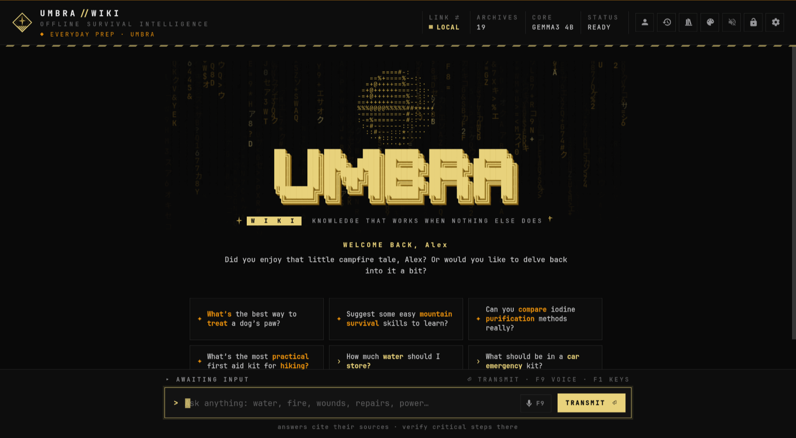
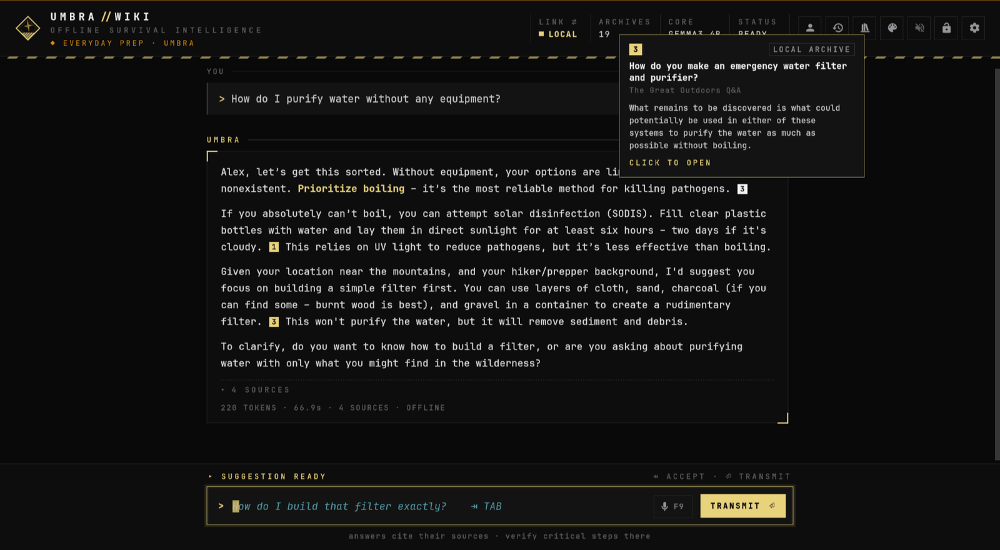
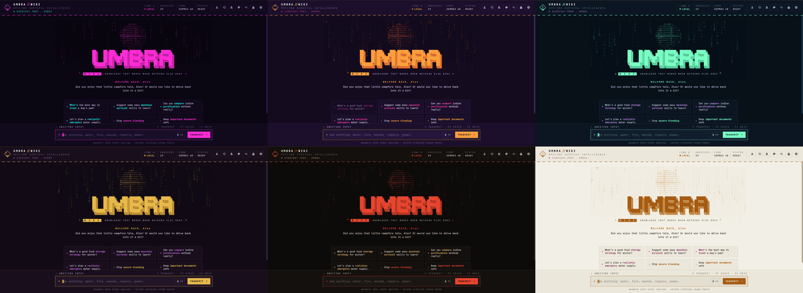

Umbra Wiki is an offline survival assistant: a local AI that answers from a library stored on your own computer, cites its sources, and keeps working with no internet. This page installs it from [umbra], its signed pacman repository, so it installs and updates like any other Arch software. On Windows 11? Download the Windows app (more).

Umbra Wiki's start screen. More on GitHub.
Already have Umbra? Update it with the rest of your system; Umbra shows what's new the next time it opens:
$ sudo pacman -Syu
Open a terminal and run these one at a time. Each asks for your password
(sudo) because it changes system settings. Copy buttons are on the right.
$ curl -sL https://umbraxc.github.io/umbra-repo/umbra.gpg | sudo pacman-key --add - $ sudo pacman-key --lsign-key E50B101F98529A32564FDD3B37A6D2DA9E6A0F0B
Every Umbra package is signed with this key. You import it once and mark it as trusted, and pacman then checks the signature on every download and refuses anything that was changed along the way. The key's fingerprint is E50B 101F 9852 9A32 564F DD3B 37A6 D2DA 9E6A 0F0B; it's also shown on the project page.
$ printf '\n[umbra]\nServer = https://umbraxc.github.io/umbra-repo/$arch\n' | sudo tee -a /etc/pacman.conf
This adds two lines to the end of /etc/pacman.conf, pacman's settings file, telling it
where Umbra's packages live. If you prefer to edit it yourself (sudo nano /etc/pacman.conf), the end
of the file should read:
[umbra] Server = https://umbraxc.github.io/umbra-repo/$arch
$ sudo pacman -Sy umbra-wiki
pacman refreshes its package lists (now including [umbra]), then installs Umbra Wiki and everything it needs: Ollama (the local AI engine), the library server, the window toolkit and the font.
$ sudo systemctl enable --now ollama $ umbra-wiki
The first line starts Ollama now and at every boot (only needed once). Then open Umbra from your app
launcher or with umbra-wiki: its welcome tour picks the AI model and the offline library that suit your
computer, and downloads them in the background.
A real installation, as it appears in the terminal:
$ curl -sL https://umbraxc.github.io/umbra-repo/umbra.gpg | sudo pacman-key --add - ==> Updating trust database... $ sudo pacman-key --lsign-key E50B101F98529A32564FDD3B37A6D2DA9E6A0F0B -> Locally signed 1 key. ==> Updating trust database... $ printf '\n[umbra]\nServer = https://umbraxc.github.io/umbra-repo/$arch\n' | sudo tee -a /etc/pacman.conf [umbra] Server = https://umbraxc.github.io/umbra-repo/$arch $ sudo pacman -Sy umbra-wiki :: Synchronizing package databases... core downloading... extra downloading... umbra downloading... resolving dependencies... Package (1) New Version Net Change Download Size umbra/umbra-wiki 3.2.0-1 105.73 MiB 76.55 MiB :: Proceed with installation? [Y/n] y checking keyring... checking package integrity... installing umbra-wiki... ==> Umbra Wiki is installed. ==> 1. Start the local AI engine once (it then starts by itself): ==> sudo systemctl enable --now ollama ==> 2. Open "Umbra Wiki" from your app launcher, or run: umbra-wiki ==> The welcome tour picks the AI model and the offline library with you.
"checking package integrity" is pacman verifying the signature with the key from step 1.
pacman -Qi umbra-wiki then shows Validated By: SHA-256 Sum Signature.

Answers cite their sources.

22 themes, backgrounds and transitions.
Umbra Wiki is also a native Windows app: download the installer, run it, done. No Linux, no terminal, and no administrator rights needed.
Umbra-Wiki-Setup.exe · version 3.2.0 · Windows 11 (or Windows 10, 64-bit).
Always the newest version; checksums in the release
(SHA256SUMS-windows.txt).
Windows may say "Windows protected your PC" the first time: the installer isn't code-signed yet. Click More info, then Run anyway. Every installer is built by GitHub from Umbra's public code.
Keep Install Ollama, the local AI engine ticked (a free download of about 1 GB). It's what runs Umbra's AI on your PC. Already have Ollama? The option doesn't appear.
From the last page of the installer, or the Start menu. The welcome tour picks the AI model and the offline library that suit your PC and downloads them in the background.
| GOOD TO KNOW | |
|---|---|
| Updates | Automatic: once a day Umbra checks for a new version and offers to install it with one click. It verifies the download, updates and reopens by itself, and everything of yours stays. (Settings → Help & updates switches the check off.) |
| What works | Everything, with two exceptions: Signals & Radar shows Wi-Fi networks but not Bluetooth devices and has no kill switch (use airplane mode), and voice input isn't available on Windows yet. |
| Graphics cards | Ollama uses NVIDIA and AMD Radeon cards on Windows by itself, for much faster answers. |
| Your files | The library is in %USERPROFILE%\UmbraWiki; settings and conversations in
%APPDATA%\UmbraWiki and %LOCALAPPDATA%\UmbraWiki. |
| Remove it | Umbra's Settings → Danger zone → Uninstall removes Umbra with your data. Windows' Settings → Apps → Umbra Wiki removes only the app. |
Windows 11 can run Linux apps in their own windows, next to your Windows apps, with WSL (Windows Subsystem for Linux). You install Arch Linux inside it, then Umbra from the same signed repository as above. It takes about 20 minutes, most of it downloading. You need Windows 11 with its latest updates, about 15 GB of free disk space and 8 GB of memory or more.
Right-click the Start button and choose Terminal (Admin). Run:
PS> wsl --install --no-distribution PS> wsl --update PS> wsl --install archlinux
If Windows asks to restart after the first line, restart, open Terminal (Admin) again and carry on.
The last line leaves you at an Arch Linux prompt as root.
At that Arch prompt, replace alex with the name you want (lower case, no spaces) in
each line:
# pacman -Syu --noconfirm sudo # useradd -m -G wheel alex # passwd alex # echo '%wheel ALL=(ALL:ALL) ALL' > /etc/sudoers.d/wheel # printf '[user]\ndefault=alex\n\n[boot]\nsystemd=true\n' > /etc/wsl.conf # exit
passwd asks for a password twice; nothing shows while you type. Then restart Arch
in PowerShell so it opens as your user:
PS> wsl --terminate archlinux PS> wsl -d archlinux
$ sudo pacman-key --init $ sudo pacman-key --populate archlinux $ curl -sL https://umbraxc.github.io/umbra-repo/umbra.gpg | sudo pacman-key --add - $ sudo pacman-key --lsign-key E50B101F98529A32564FDD3B37A6D2DA9E6A0F0B $ printf '\n[umbra]\nServer = https://umbraxc.github.io/umbra-repo/$arch\n' | sudo tee -a /etc/pacman.conf $ sudo pacman -Syu --noconfirm umbra-wiki libpulse $ sudo systemctl enable --now ollama
The first two lines set up pacman's keys (a fresh WSL Arch doesn't have them yet); the next three
are steps 1 and 2 from the top of this page. libpulse gives Umbra its sounds on Windows, and the last
line starts Ollama, the local AI engine.
$ umbra-wiki
Umbra opens in its own window and its welcome tour downloads the AI model and a library. From then on it's also in the Windows Start menu as Umbra Wiki (search "Umbra").
| GOOD TO KNOW | |
|---|---|
| What works | Everything, sounds included, with two exceptions: the Signals & Radar screen can't reach Wi-Fi and Bluetooth (Windows keeps the radios), and voice input isn't set up. |
| Your files | In File Explorer: Linux → archlinux → home → your name → UmbraWiki. Exports, cards and links open in your Windows apps. |
| Updates | Open Arch Linux from the Start menu and run sudo pacman -Syu. |
| NVIDIA graphics | With an up-to-date NVIDIA driver on Windows, run
sudo pacman -S ollama-cuda and sudo systemctl restart ollama for much faster
answers. Other graphics cards aren't used under WSL: the processor does the work. |
| 8 GB of memory | Give Linux a little more room: create C:\Users\<you>\.wslconfig containing
[wsl2] and memory=6GB on two lines, then run wsl --shutdown. |
| No window appears | Update Windows, run wsl --update and wsl --shutdown
in PowerShell, then try again. |
| Remove it all | wsl --unregister archlinux in PowerShell deletes Arch with Umbra and
all its data. |
| TO | RUN |
|---|---|
| Update Umbra (with the rest of your system) | sudo pacman -Syu |
| Remove Umbra | sudo pacman -R umbra-wiki, then, if you like, remove the two [umbra] lines from /etc/pacman.conf and the key: sudo pacman-key --delete E50B101F98529A32564FDD3B37A6D2DA9E6A0F0B |
| Remove your Umbra data too | In Umbra: Settings → Danger zone → Uninstall, before removing the package (or delete ~/.config/umbra-wiki, ~/.local/share/umbra-wiki and ~/UmbraWiki) |
Umbra can listen instead of reading: install voxtype from the AUR, for example with
yay -S voxtype-bin, then run voxtype setup --download --model base.en. Hold F9 in the Umbra
window to talk.
The key from step 1 isn't trusted yet. Run both commands of step 1 again, then sudo pacman -Sy umbra-wiki.
pacman doesn't know the repository yet: check step 2 (the two lines at the end of /etc/pacman.conf),
then run sudo pacman -Sy umbra-wiki again.
CORE OFFLINE: Ollama isn't running, see step 4. NO MODEL: pick or download a model in Umbra's Settings → AI model, or replay the welcome tour.
Umbra plays sounds with pw-play (package pipewire-audio) or, on PulseAudio systems,
paplay (package libpulse). They're optional, so a minimal install may have neither. In order:
sudo pacman -S --needed pipewire-audio (most systems) or
sudo pacman -S --needed libpulse (PulseAudio). Then press ▶ TEST in Settings → Sound; no restart needed.The full checklist, with a one-line diagnostic command, is in the README.
Not yet. Umbra Wiki will also be published to the AUR as umbra-wiki as soon as AUR account registration
reopens. This repository then stays available; you can use either.
| Windows 11 | Download the Windows app, or run the Linux version through WSL: see Windows 11 above. |
| Omarchy | Install Omarchy Umbra from the Omarchy plugin marketplace: a bar widget plus a guided setup. |
| Package file | Download the package from the latest release and install it with sudo pacman -U (no automatic updates). |
| Build it yourself | The recipe is in the main repository's aur/PKGBUILD: makepkg -si. |
| AUR | Coming as umbra-wiki when AUR registration reopens. |